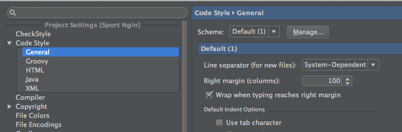
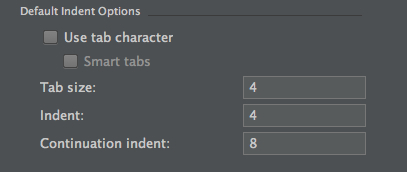

Android
This style-guide was created from content from Google's Java style-guide as well as the Android Open Source Project's style-guide. If you can't find an answer in here, use your best judgement and keep things readable. Strive for terse, readable code.
Table of Contents
Java Language Rules
Do not Ignore Exceptions
Either throw a new exception or handle the error in the catch block. If you do ignore an exception, rename the catch expression to ignored.
void setServerPort(String value) {
try {
serverPort = Integer.parseInt(value);
} catch (NumberFormatException ignored) { }
}
Fully Qualify Imports
When importing a class, use the fully qualified package. Donot use a wildcard for imports. Better yet, use Android Studio's "Organize Imports" to fully qualify the imports and order them correctly.
Order Import Statements
The ordering of import statements is:
To exactly match the IDE settings, the imports should be:
- Alphabetical within each grouping, with capital letters before lower case letters (e.g. Z before a).
- There should be a blank line between each major grouping (
android,com,junit,net,org,java,javax).
Better yet, use Android Studio's "Organize Imports" to fully qualify the imports and order them correctly.
Write Short Methods
To the extent that it is feasible, methods should be kept small and focused. It is, however, recognized that long methods are sometimes appropriate, so no hard limit is placed on method length. If a method exceeds 40 lines or so, think about whether it can be broken up without harming the structure of the program.
Variable Declarations
- Fields should be defined at the top of the file. Do not define fields in between methods.
- Non-public, non-static field names start with
m. - Static field names start with
s. - Other fields start with a lower case letter
- Public static final fields (constants) are ALL_CAPS_WITH_UNDERSCORES.
- All variables should use camel case for naming
public class MyClass {
public static final int SOME_CONSTANT = 42;
public int publicField;
private static MyClass sSingleton;
int mPackagePrivate;
private int mPrivate;
protected int mProtected;
public void someMethod() {
}
}
Limit Variable Scope
The scope of local variables should be kept to a minimum (Effective Java Item 29). By doing so, you increase the readability and maintainability of your code and reduce the likelihood of error. Each variable should be declared in the innermost block that encloses all uses of the variable.
Local variables should be declared at the point they are first used. Nearly every local variable declaration should contain an initializer. If you don't yet have enough information to initialize a variable sensibly, you should postpone the declaration until you do.
One exception to this rule concerns try-catch statements. If a variable is initialized with the return value of a method that throws a checked exception, it must be initialized inside a try block. If the value must be used outside of the try block, then it must be declared before the try block, where it cannot yet be sensibly initialized:
// Instantiate class cl, which represents some sort of Set
Set s = null;
try {
s = (Set) cl.newInstance();
} catch(IllegalAccessException e) {
throw new IllegalArgumentException(cl + " not accessible");
} catch(InstantiationException e) {
throw new IllegalArgumentException(cl + " not instantiable");
}
// Exercise the set
s.addAll(Arrays.asList(args));
But even this case can be avoided by encapsulating the try-catch block in a method:
Set createSet(Class cl) {
// Instantiate class cl, which represents some sort of Set
try {
return (Set) cl.newInstance();
} catch(IllegalAccessException e) {
throw new IllegalArgumentException(cl + " not accessible");
} catch(InstantiationException e) {
throw new IllegalArgumentException(cl + " not instantiable");
}
}
...
// Exercise the set
Set s = createSet(cl);
s.addAll(Arrays.asList(args));
Loop variables should be declared in the for statement itself unless there is a compelling reason to do otherwise:
for (int i = 0; i < n; i++) {
doSomething(i);
}
and
for (Iterator i = c.iterator(); i.hasNext(); ) {
doSomethingElse(i.next());
}
Use Standard Brace Style
Braces do not go on their own line; they go on the same line as the code before them. So:
class MyClass {
int func() {
if (something) {
// ...
} else if (somethingElse) {
// ...
} else {
// ...
}
}
}
We require braces around the statements for a conditional. Except, if the entire conditional (the condition and the body) fit on one line, you may (but are not obligated to) put it all on one line. That is, this is legal:
if (condition) {
body();
}
and this is legal:
if (condition) body();
but this is still illegal:
if (condition)
body(); // bad!
Limit Line Length
Each line of text in your code should be at most 100 characters long.
Exception: if a comment line contains an example command or a literal URL longer than 100 characters, that line may be longer than 100 characters for ease of cut and paste.
Exception: import lines can go over the limit because humans rarely see them. This also simplifies tool writing.
Use Android Studio's wrapping option to automatically wrap your lines while typing.

Treat Acronyms as Words
Treat acronyms and abbreviations as words in naming variables, methods, and classes. The names are much more readable:
| Good | Bad |
|---|---|
| XmlHttpRequest | XMLHTTPRequest |
| getCustomerId | getCustomerID |
| class Html | class HTML |
| String url | String URL |
| long id | long ID |
Use TODO Comments
Use TODO comments for code that is temporary, a short-term solution, or good-enough but not perfect.
TODOs should include the string TODO in all caps, followed by a colon:
// TODO: Remove this code after the UrlTable2 has been checked in.
and
// TODO: Change this to use a flag instead of a constant.
If your TODO is of the form "At a future date do something" make sure that you either include a very specific date ("Fix by November 2014") or a very specific event ("Remove this code after tested on production").
Use Spaces for Indentation
We use 4 space indents for blocks. We never use tabs. When in doubt, be consistent with code around you.
We use 8 space indents for line wraps, including function calls and assignments. Use the code style settings in Android Studio to set this for you:

Android Rules
Loading Resources
Loading something from a resource adds a small delay. So always load resource objects in an onCreate or onCreateView and store it within the class. It should never be loaded when a view is already on screen.
Resource Files
- Use descriptive names for resource files
- Use undescore naming
- Prefix a file with prefix where it makes sense. Eg: For layout files, prefix Fragments with
fragment_, activities withactivity_, list item rows withrow_.
Resource Ids
Strings
- Place all strings that are localizable in
strings.xml. Place all strings that are not localizable in
strings_do_not_translate.xml. These strings should also include the attributetranslatable="false"eg:
<string name="API_BASE_URL" translatable="false" tools:ignore="UnusedResources">https://api.stage.com/</string>Place all strings whose ids are verbatim of the string in
strings_verbatim.xml. Always check to see if a verbatim string already exists before creating a new resource.eg:
<string name="cancel">Cancel</string> <string name="edit">Edit</string>Use a comment to section out the
strings.xmlbased on where they go in the app.eg:
<!-- Left Drawer --> <string name="navigation_drawer_open">Open navigation drawer</string> <string name="navigation_drawer_close">Close navigation drawer</string>